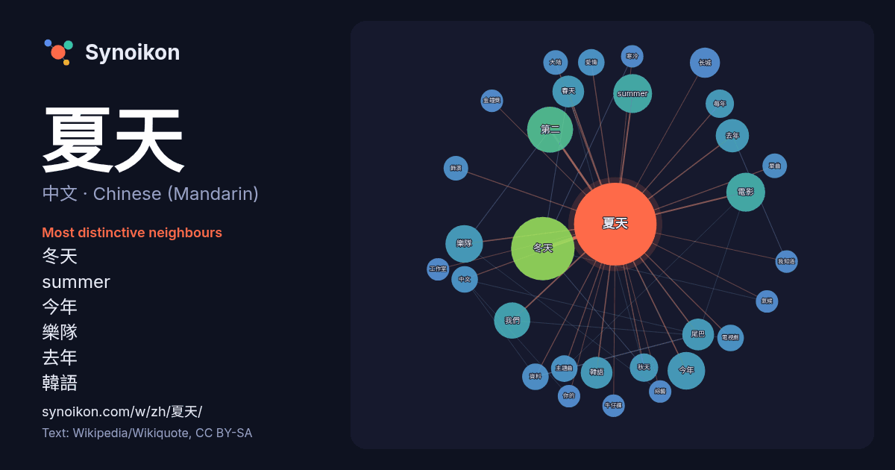

中文 · Chinese (Mandarin) · word of the day list
夏天
“summer” · The words found around it in 734 instances from Chinese (Mandarin) Wikipedia, Wikiquote.

Most distinctive neighbours
- 冬天 39×
- summer 16×
- 今年 14×
- 樂隊 14×
- 去年 12×
- 韓語 11×
- 春天 11×
- 尾巴 10×
- 我們 9.8×
- 长城 9.7×
- 秋天 8.8×
- 第二 8.5×
- 電影 8.1×
- 主題曲 7.4×
- 愛情 7.3×
- 電視劇 7.0×
- 中文 6.0×
- 每年 6.0×
- 牛仔褲 6.0×
- 金鐘獎 5.9×
× = how many times more often than in general Chinese (Mandarin) Wikipedia text.
Most frequent neighbours
- 冬天 40
- 第二 21
- summer 15
- 電影 15
- 今年 14
- 樂隊 14
- 我們 13
- 去年 11
- 香港 11
- 尾巴 10
- 春天 10
- 韓語 10
- 故事 9
- 第一 9
- 长城 9
- 平均 8
- 每年 8
- 秋天 8
- 這個 8
- 開始 8
In context
- 中國沿岸等地，東北季候風會被西南季候風阻擋，導致東北季候風以後整個夏天將不會再來中國沿岸城市，亦代表着中國沿岸的東北季候風正式結束，直至8月尾至9月中，秋天開始才會再來第一波。而中國沿海地市通常會以第一波西南季候風抵達的時候，作夏天到來的定義。 北方的東北季候風所帶來的冷空氣和南方的西南季候風所帶 Wikipedia snippets · 夏季
- 《16個夏天》是2014年TVBS歡樂台第四部原創概念劇。豐采文創和聯意製作股份有限公司共同製作。由林心如、楊一展、許瑋甯、謝佳見、鄒承恩主演，林心如同時擔當本劇製作人。 於2014年3月31日開拍，7月1日正式殺青。7月19日起每週六晚間9點公視、10點TVBS歡樂台聯合首播。公視、TVBS歡樂台於11月1日播出最終回。 Wikipedia snippets · 16個夏天
- 《狐狸的夏天》（英語：The Fox's Summer），2017年中国偶像剧，改编自沈滄眉的網絡小说《当总裁恋爱时》。2016年8月至10月拍攝，是由康曦影業、企鵝影視、中傳聯動聯合出品的青春派萌系偶像劇，由于中中執導，姜潮、谭松韵、张鑫、王妍之领衔主演，該劇講述了謊言發射機“狐狸小姐”與人肉測謊 Wikipedia snippets · 狐狸的夏天
- 《夏天協奏曲》（英語：Summer Times）是一部由黃朝亮執導的台灣電影，並由張睿家、林逸欣和林美秀等人主演。本片在台灣於2009年11月27日上映。下片後於2010年4月23日起於台灣各影視出租店開始出租，並於2010年5月18日起於台灣各通路開始販售。 夏天是夏日精靈回到金門的季節，阿寬在網路上看到全國鋼琴大賽第 … Wikipedia snippets · 夏天協奏曲
- 許富翔（1981年7月14日—），台灣導演，國立臺北藝術大學電影創作研究所畢業。曾以《16個夏天》獲得第50屆金鐘獎戲劇節目導演獎。 2018年8月17日，許富翔與演員陳意涵結婚。2019年2月，兩人長子出生。2021年11月，長女出生。 美麗佳人. 金鐘50得獎名單出爐！《16個夏天》奪戲劇節目大獎 藍正龍、朱芷瑩成本屆視帝、視后. 美麗佳人 Wikipedia snippets · 許富翔
- 《去年夏天》（法語：L'Été dernier）是2023年上映的法国情色劇情片，翻拍自2019年丹麦电影《红心女王（英语：Queen of Hearts (2019 film)）》， 由凯瑟琳·布雷亚执导，布雷亚与帕斯卡·博尼策（英语：Pascal Bonitzer）共同编剧，蕾雅·德吕盖（英语：Léa Wikipedia snippets · 去年夏天
- 演員、歌手，畢業於中央戲劇學院07級表演本科班。2008年，出演首部電視劇《蘇菲日記》正式進入演藝圈。2013年，主演校園青春情感劇《一又二分之一的夏天》。2014年，簽約韓國經紀公司JYP娛樂。2015年，獲得「亞洲影響力·東方盛典」最具潛力新人獎。2016年，在其主演的民國穿越劇《相愛穿梭千年2 Wikipedia snippets · 魏大勋
- 夏天（韓語：여름，羅馬化：Yeo reum，1999年1月10日—），本名李夏天（韓語：이여름，英語：Lee Yeo Reum），出生于韩国首尔，韓國女歌手，STARSHIP娛樂旗下女子組合宇宙少女及小分隊Joy組成員，在隊中擔任副唱。2016年2月25日以宇宙少女成員身份，發行首張迷你專輯《WOULD Wikipedia snippets · 夏天 (歌手)
More Chinese (Mandarin) words
Precomputed on 2026-10-09 with default settings (±5 words, medium corpus). The interactive map can refresh it with live data.